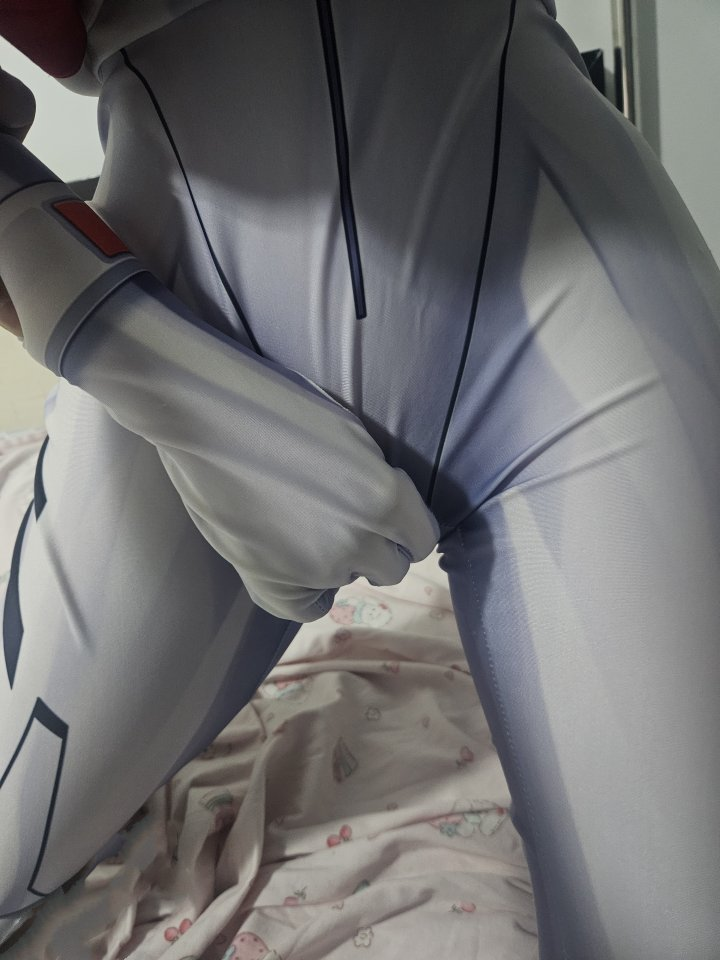

飞向星系✨🇨🇳🍔🍟🍜🍛
@xingxing_byd
RT @kateamine66: 連身衣就是脫起來太麻煩了，壞處是只能蹭蹭揉揉，好處是可以有充分的理由尿褲子和選擇打脖子🥹拍了好多好多照片和影片，每過50轉發就我po一組新的😘。長影片放最後。
#EVANGELION #綾波レイ #エヴァ #cosplay https://t…

Kateamine66
@kateamine66
連身衣就是脫起來太麻煩了，壞處是只能蹭蹭揉揉，好處是可以有充分的理由尿褲子和選擇打脖子🥹拍了好多好多照片和影片，每過50轉發就我po一組新的😘。長影片放最後。
#EVANGELION #綾波レイ #エヴァ #cosplay https://t.co/NdiVUCRcL5